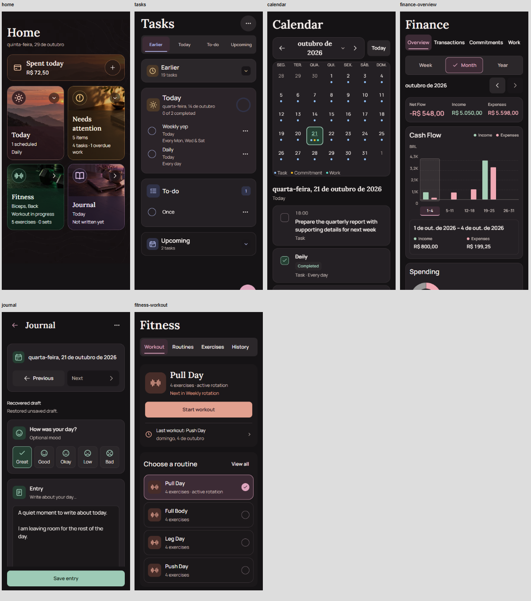
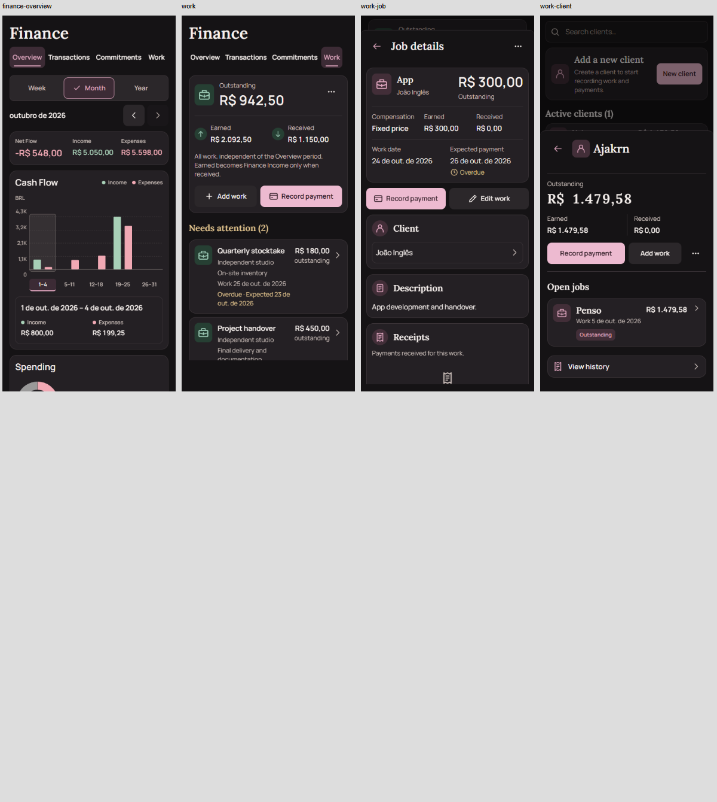
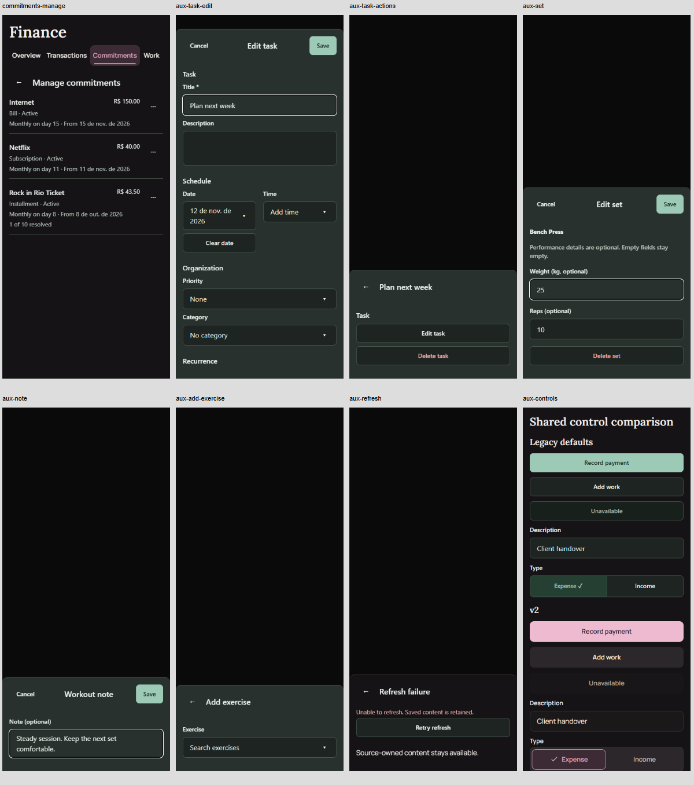
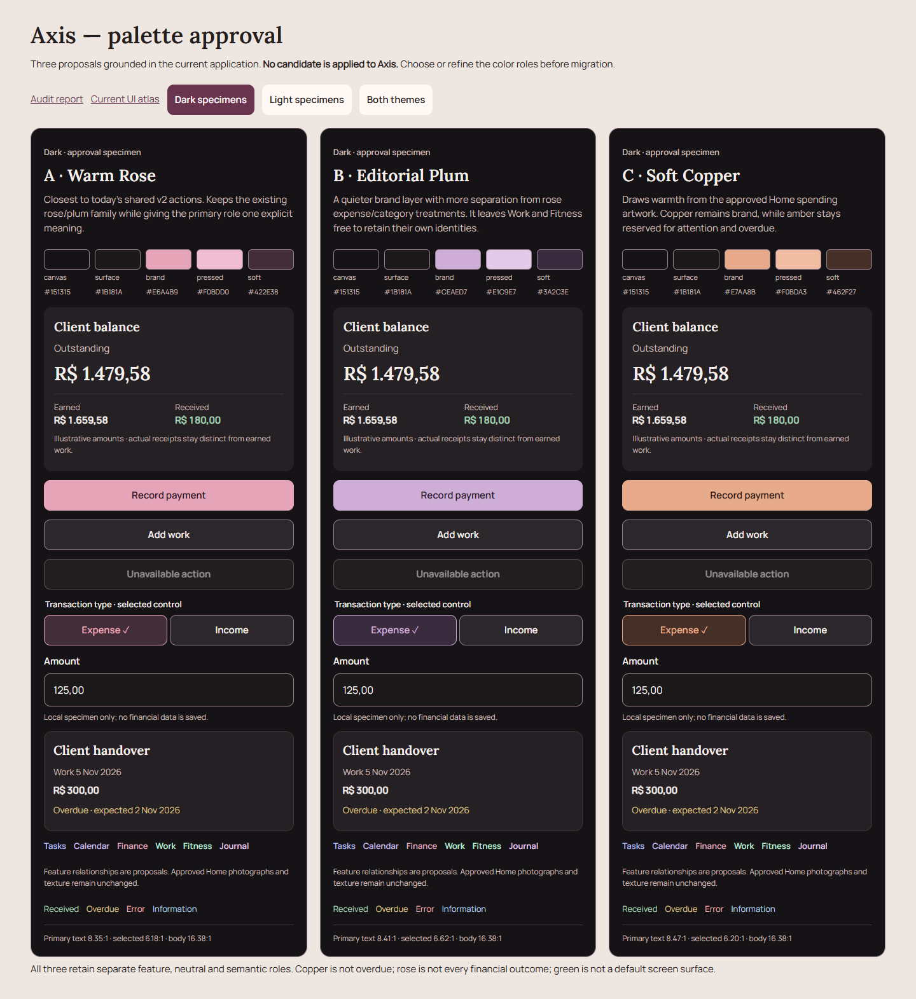

Axis visual unification
Phase1 · 12 November 2026 · source 16ebeab. Audit and proposals only. No application styles, assets, behavior or data were changed.
Current application
154 source-based browser captures in both themes. Includes phone-width and doubled-text stress samples, active legacy paths, menus, editors and archives.
Browser evidence, synthetic fixtures, native substitutes. No physical-device acceptance is claimed. Work History is confirmed v2.
Palette proposals
A Warm Rose · B Editorial Plum · C Soft Copper. Each includes light/dark controls, financial summary, form field, card and feature/semantic relationships.
Compare interactive specimens →
These are approval candidates, never app imports. Approved Home photographs and both textures are preserved.
Header comparison

Financial hierarchy

Active legacy paths and shared controls

Three directions, same realistic layout
Dark full image · Light full image · Interactive themes



Next: select or refine brand/feature/semantic roles before foundation migration. No commit or push.